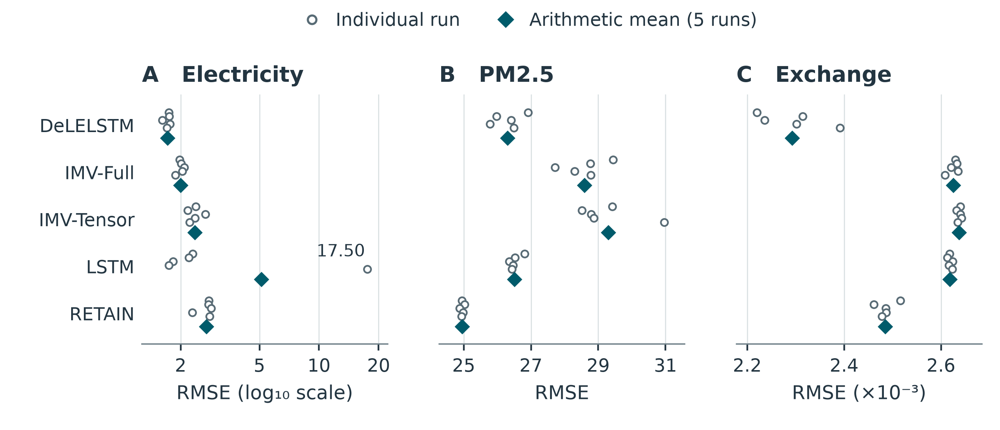
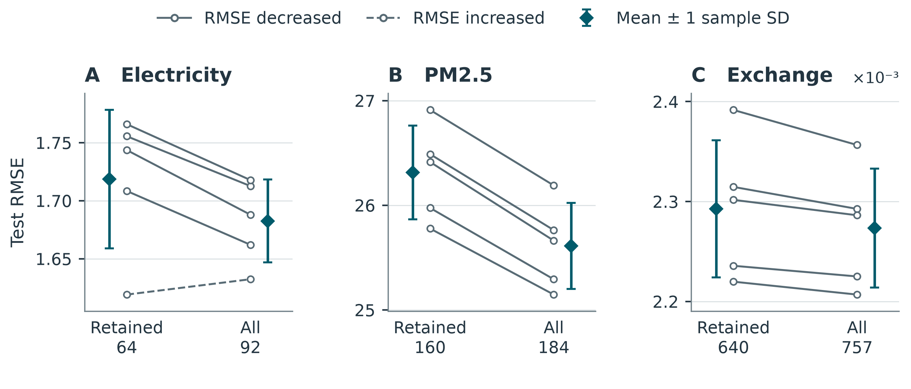
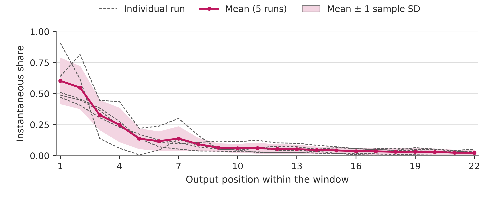

DS6013 · Group 17
Testing DeLELSTM
on future periods
Does a low exchange-rate error on a random split carry over to later dates?
Model architecture · Released implementation · Paper Section 2
DeLELSTM forecasts from its reconstructed state
Exchange example · 8 input rates, a 32 × 16 design matrix and 16 fitted coefficients per prediction step.
Least-squares objective wt ∈ arg minw ‖Ht − Atw‖²over 32 hidden coordinates
Fixed random split · Paper Figure 1
DeLELSTM led on two of three datasets
Five models and five training seeds on each dataset gave 75 runs. Lower test RMSE means a closer forecast.

DeLELSTM had the lowest mean RMSE on Electricity and Exchange. RETAIN led on PM2.5.
Historical reference · Paper Figure 3
117 Exchange test windows went unscored
We kept all 15 DeLELSTM checkpoints fixed and restored the last partial test batch on each dataset.

14 of 15 RMSE values fell. We use the complete random test set as our historical reference.
Protocol audit · Paper Section 6.1
Future information entered training in two ways
The random split mixed dates. The scaler also used input values from outside the training set.
Exchange · overlapping dates
757 / 757
test windows shared at least one day with training.
PM2.5 · input scaling
- Range of training inputs
- 1–886
- Range used to scale those windows
- 0–994
Our evaluation pipeline · Paper Sections 6.3–6.4
Training data set the scale for every later forecast
We ran the same five steps for each chronological fold.
PM2.5. Fill inputs from past readings. Mask missing targets during training, validation and testing.
Chronological evaluation · Paper Section 6.3
Each of the nine splits had zero shared time points
We checked the original time points in each training, validation and test set.
Three expanding training periods per dataset · shares of window starts before boundary exclusions
Fold 1Train 55%Validate 15%Test 10%
Fold 2Train 65%Validate 15%Test 10%
Fold 3Train 75%Validate 15%Test 10%
EarlierLater
Exchange. Dropping 29 starts separated the 30-day windows.
PM2.5. The final test scored 3,964 of 4,026 targets.
DeLELSTM on later dates · Paper Table 3
Future forecast errors varied by dataset
Mean test RMSE for DeLELSTM. 43 of 45 planned runs produced scores. Compare within each row.
Mean DeLELSTM test RMSE on the full historical random split and on three later test periods. Lower is better.
| Dataset | Full random test | Future period 1 | Future period 2 | Future period 3 |
|---|
| Electricity | 1.6825 | 1.6299 | 1.5753 | 1.9677 |
|---|
| PM2.5 | 25.6103 | 18.09 | 23.01* | 17.85 |
|---|
| Exchange | 0.002273 | 0.025994 | 0.008203 | 0.005136 |
|---|
* Two PM2.5 runs failed in period 2. This mean uses 3 seeds. All other means use 5.
The protocols cover different test dates. The historical PM2.5 score also includes filled targets.
Conclusion · Exchange
Exchange error was higher
in all three future periods.
The three period means were about 2.3 to 11.4 times the full random-test RMSE. PM2.5 was lower in all three periods. Electricity was mixed.
Next experiment
Keep the future windows, observed targets and seeds fixed. Change one part of the evaluation at a time.
Q&A · Model interpretation · Paper Figure 2
How did DeLELSTM use the latest PM2.5 change?
For each variable, DeLELSTM weights the previous hidden state and the change since the last step.

The mean instantaneous share fell from 60.3% to 2.3% across the 22 output positions.
Q&A · Inference speed · Paper Table 4
How fast was one forecast on an H100?
Inputs and weights were already on the GPU. FP32 timing includes the coefficient solves, with TF32 off.
17–19ms
Median single-window latency
Across the three datasets, P95 ranged
from 17.49 to 22.49 ms.
Batched throughput
Test windows per second
Thanks for Listening